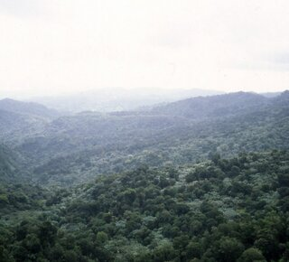
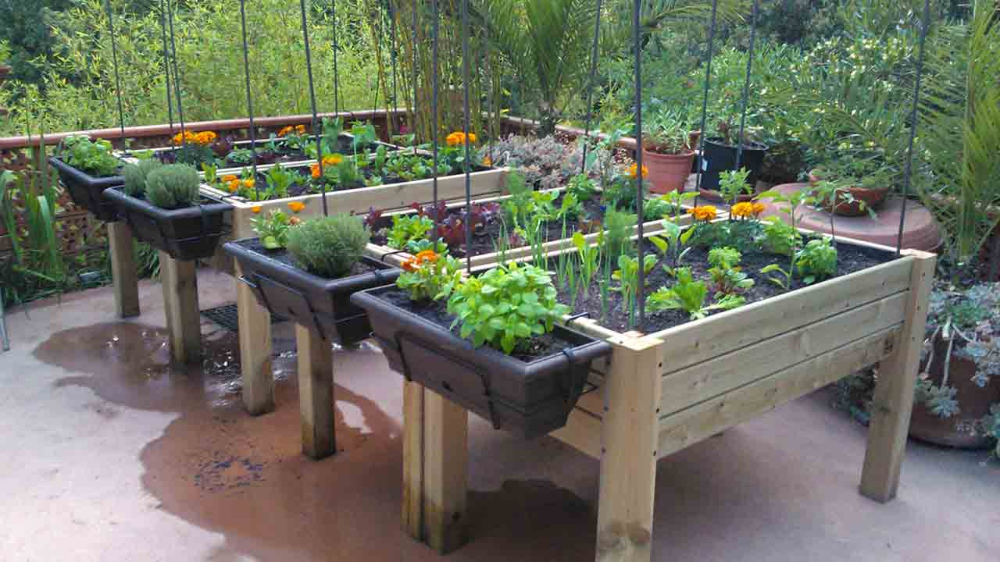

¿Qué es exactamente un ecosistema?
Es un complejo dinámico que incluye seres vivos como animales, plantas, microorganismos y los elementos no vivos del ambiente como el aire, el agua y el suelo. Todos estos organismos funcionan juntos como una unidad interactiva. Los seres humanos, al igual que el resto de seres vivos somos parte de los ecosistemas, afectándolos y a sus procesos positiva o negativamente, pero también dependemos de ellos en sobremanera para nuestra propia supervivencia.
Hay varios tipos de ecosistema, pueden ir desde los muy prístinos como los bosques primarios hasta los modificados como las plantaciones agrícolas.
Los ecosistemas son cruciales para la humanidad porque nos proveen con los bienes y servicios que necesitábamos para mantener nuestra vida en la tierra. Por ejemplo: : los bosques nos proveen con alimentos, madera, plantas usadas en la medicina natural. Los ecosistemas costeros como los manglares proveen de fuentes de alimento y una defensa natural contra los fenómenos climáticos extremos como las inundaciones. Los ríos y lagos nos proveen de agua fresca para beber. Todos estos atributos que hacen que la vida en la tierra sea posible son servicios ecosistémicos.
Debemos recordar que cuando decimos servicios ecosistémicos estamos hablando de un concepto enfocado en el ser humano pero los ecosistemas son importantes en sí mismos y su valor no radica en el beneficio que brindan a los humanos
Usualmente hablamos de cuatro principales grupos de servicios ecosistémicos.

Servicios de regulación: Son los beneficios obtenidos de la regulación de los procesos ecosistémicos, por ejemplo: la regulación de la calidad del aire y la fertilidad de los suelos, el control de las inundaciones y la polinización de los cultivos. La regulación del clima a nivel global y local es un servicio regulatorio realmente importante.

Servicios de apoyo: Proveen la estructura básica para sostener la vida en la tierra, son necesarios para la producción de todos los demás servicios ecosistémicos. La creación de nueva materia viviente, el oxígeno producido en la fotosíntesis y el reciclaje de nutrientes en el suelo, son algunos ejemplos de este tipo de servicios.

Servicios de abastecimiento: Se refiere a todos estos productos que cosechamos, más o menos, directamente de la naturaleza, por ejemplo: los alimentos que obtenemos de plantas, animales y microorganismos incluyendo algunos como carne, pescado, maíz, trigo, miel y frutas. También se incluyen la medicina natural, los recursos genéticos y bioquímicos que son importantes para la industria farmacéutica.
Datos destacables
Bosques
Alrededor de 1.600 millones de personas dependen de los bosques para su sustento, incluidos 70 millones de personas indígenas.
Los bosques albergan a más del 80% de todas las especies terrestres de animales, plantas e insectos.
Entre 2010 y 2015, el mundo perdió 3,3 millones de hectáreas de áreas forestales. Las mujeres rurales pobres dependen de los recursos comunes y se ven especialmente afectadas por su agotamiento.
Desertificación
2.600 millones de personas dependen directamente de la agricultura, pero el 52% de la tierra utilizada para la agricultura se ve moderada o severamente afectada por la degradación del suelo.
La pérdida de tierras cultivables se estima en 30 a 35 veces la tasa histórica. Debido a la sequía y la desertificación, se pierden 12 millones de hectáreas cada año (23 hectáreas por minuto). En un año, podrían haberse cultivado 20 millones de toneladas de grano.
74 por ciento de los pobres son directamente afectados por la degradación de la tierra a nivel mundial.
Biodiversidad
La caza furtiva y el tráfico ilícitos de vida silvestre continúan frustrando los esfuerzos para su conservación, casi 7.000 especies de animales y plantas fueron denunciadas como parte del comercio ilegal en 120 países.
De las 8.300 razas de animales conocidas, el 8% está extinto y el 22% está en peligro de extinción.
De las más de 80,000 especies de árboles, menos del 1 por ciento se han estudiado para su posible uso.